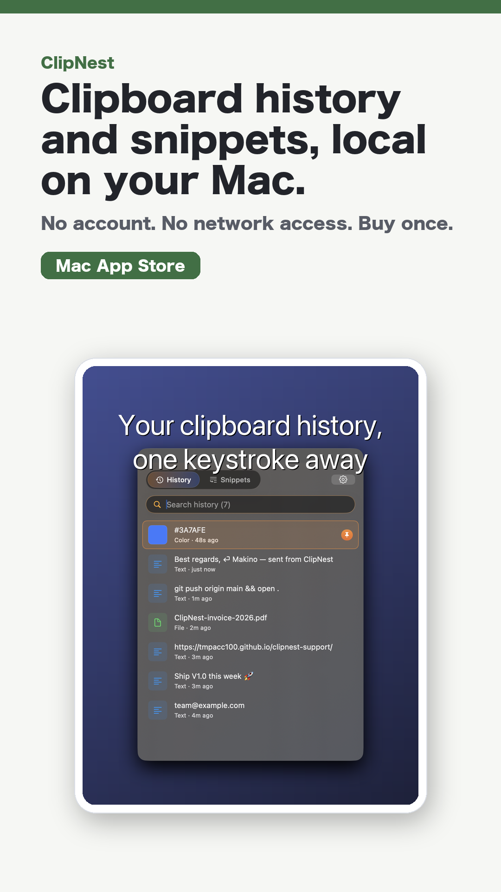

Macユーティリティ / macOS
ClipNest
Clipboard history and snippets, local on your Mac.
Macのクリップボード履歴とスニペット展開を1つに。ネットワーク権限なし、買い切り、ローカルファーストなmacOSユーティリティ。

紹介文
1行紹介
Macのクリップボード履歴とスニペット展開を1つに。ネットワーク権限なし、買い切り、ローカルファーストなmacOSユーティリティ。
媒体向け概要
ClipNest keeps clipboard history and reusable snippets local on your Mac. It is designed for fast search, pinning, and text expansion without accounts or network access.
掲載向けポイント
切り口Mac productivity, clipboard manager, privacy-first utility, indie Mac app audiences.
公開状態ASC app record found and public Mac App Store URL returns 200
Contactasd95179517@gmail.com
素材

- square PNG: https://tmpacc100.github.io/assets/social/clipnest-square.png
- story PNG: https://tmpacc100.github.io/assets/social/clipnest-story.png
- vertical_1080x1920_mp4: https://tmpacc100.github.io/assets/video/clipnest-short.mp4
{kind=link}
{kind=link}
配布リンク
- Store URL: https://apps.apple.com/us/app/apple-store/id6777420616
- X organic: https://tmpacc100.github.io/go/clipnest/x/
- Threads organic: https://tmpacc100.github.io/go/clipnest/threads/
- TikTok organic: https://tmpacc100.github.io/go/clipnest/tiktok/
- YouTube Shorts: https://tmpacc100.github.io/go/clipnest/youtube-shorts/
- Email outreach: https://tmpacc100.github.io/go/clipnest/email/
- Product Hunt: https://tmpacc100.github.io/go/clipnest/producthunt/